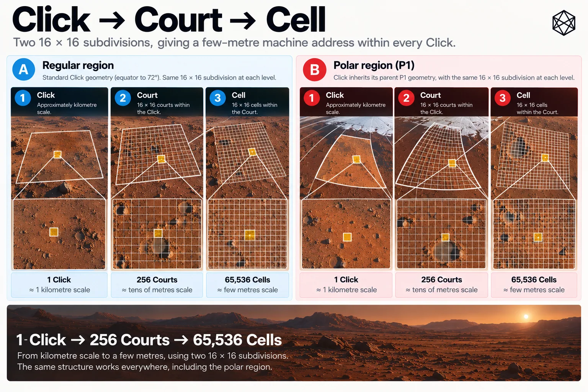

From Click to Cell
Dividing the Last Kilometre
At the end of Chapter 14, we had reduced the problem to one Click.
That was deliberate. GRID had already done the difficult planetary work: fixed the reference geography, handled the changing behaviour of longitude, resolved the poles and given every location on Mars a persistent hierarchy from Quad down to kilometre-scale Click. Bar does not need to solve any of those problems again.
It receives a Click and asks a much smaller question: how do we divide this piece of Mars until the remaining area is useful as an address?
The answer is surprisingly simple. Divide once, then divide the result once more.
Two steps below Click

Read a description of this illustration
Every Click is split into a 16-row-by-16-column Court lattice, and each Court into a 16-by-16 Cell lattice. That produces 256 Courts and 65,536 Cells per Click. Polar Clicks are divided within their inherited P1 angular bounds.
Every GRID Click is first divided into a 16 × 16 array, producing 256 Courts. Each Court is then divided in exactly the same way: another 16 × 16 array, producing 256 Cells within each Court.
So one Click contains:
256 Courts
and:
256 × 256 = 65,536 Cells
The hierarchy therefore becomes:
Click → Court → Cell
That is the entire geometric machinery of Bar.
There is a temptation, after the work required to design GRID, to expect something more exotic. There is none. Once GRID has established the correct parent area, the fine-address problem does not benefit from further planetary cleverness.
A Court is simply one sixteenth of its parent Click in each dimension. A Cell is one sixteenth of its parent Court in each dimension. Equivalently, every Click contains a 256 × 256 fine grid.
The apparent simplicity is useful. This is a layer that may eventually sit inside emergency software, logistics systems, maintenance records, autonomous vehicles and ordinary mapping applications. The less unnecessary geometry they have to carry, the better.
Why sixteen?
Sixteen earns its place for several reasons at once.
First, it produces the right physical scale. A regular equatorial GRID Click is approximately one kilometre across. Dividing that by sixteen gives a Court roughly sixty metres across; dividing by sixteen again gives a Cell roughly four metres across.
Those are useful orders of magnitude. A Court is large enough to behave like a small site, forecourt, building footprint or operational patch of ground. A Cell is small enough to distinguish one entrance from another, a vehicle from the yard around it, or a casualty from the general area in which the emergency occurred.
The dimensions vary with latitude because the parent Click varies. Bar does not pretend otherwise. Its promise is not that every Cell on Mars contains exactly the same number of square metres; its promise is that every Cell is produced by the same deterministic subdivision of whatever Click GRID has already defined.
Second, sixteen is computationally convenient. Each row or column position requires four bits because four binary digits represent sixteen possibilities. A Court therefore has a four-bit row and a four-bit column, and a Cell inside that Court has the same structure again.
The geometry and the machine representation fit one another naturally. That will matter more in the next chapter.
Third, two stages of sixteen create exactly 256 subdivisions in each direction across the Click. That gives the fine layer enough resolution without forcing another stack of named geographic levels onto the reader.
We could have built four levels of four, or eight followed by thirty-two, or several other mathematically valid arrangements. They would reach similar capacities while creating more structure to remember and more opportunities for the hierarchy to become the point.
Two identical steps are easier to explain, easier to implement and easier to test.
Court and Cell are enough.
Court is useful, but it is not another Province
The Court deserves a little care because its role can easily be misunderstood.
A Province, Sector, Tile or Click is part of GRID's civil hierarchy. Those levels exist because Mars benefits from persistent reference areas at several geographically meaningful scales.
A Court is different. It is part of the address mechanism below Click.
That distinction matters because Matlas should not encourage future settlements to organise themselves around sixty-metre squares merely because the protocol happens to contain them. A Court does not prescribe the dimensions of a building plot, street block, habitat module, lease or public space.
Real development can ignore Court boundaries completely. A large habitat may occupy several Courts. Several small structures may fit inside one. A roadway may cross them diagonally. A utility compound can begin halfway through one Court and finish halfway through another.
Bar does not care.
The Court is useful because it breaks the final kilometre into manageable pieces, provides an intermediate machine and human reference, and supports the way the three-word interface will later distinguish Court-level from Cell-level addresses.
It is an addressing level, not a planning doctrine. That is why the name sits below Click rather than beside Province or Sector in the larger geography.
Row and column
Inside a Click, Courts are indexed by row and column.
There are sixteen of each:
Court row: 0–15
Court column: 0–15
Rows follow the same broad orientation used elsewhere in Matlas: from the equatorward edge towards the poleward edge. Columns increase eastward.
A Court can therefore be represented as a pair:
(Court row, Court column)
Inside that Court, Cells use another pair:
Cell row: 0–15
Cell column: 0–15
The full fine location inside a Click can therefore be represented by four small values:
Court row, Court column, Cell row, Cell column
There is another way to see exactly the same geometry. Combine the two row values:
fine row = 16 × Court row + Cell row
and combine the two column values:
fine column = 16 × Court column + Cell column
Each resulting value runs from 0 to 255.
So:
two nested 16 × 16 grids
and:
one 256 × 256 grid
are simply two views of the same structure.
The nested view is useful to people because Court provides an intermediate scale. The 256 × 256 view is useful to software because it describes the final fine position directly.
Nothing physical changes between the two.
What a Cell means physically
Near the equator, the north–south dimension of a regular Click is just under one kilometre. A Court is therefore about sixty metres in that direction and a Cell about four metres.
The east–west dimension starts at a similar scale near the equator and decreases as longitude lines converge. Regular GRID accepts that change until 72°, and Bar inherits it. A Cell at higher regular latitude will therefore be narrower east–west than an equatorial Cell.
That is not a defect accidentally introduced by Bar. It is the physical consequence of the angular GRID architecture chosen earlier.
Above 72°, P1 has already begun adapting the longitude width of the Clicks so that they do not collapse into increasingly thin strips. Bar simply divides those adapted Clicks.
The practical result is what matters: through the overwhelming majority of Mars, a Bar Cell remains a few-metre patch of surface.
It is intentionally approximate as a physical description and exact as an address definition. The protocol can determine precisely which Cell owns a coordinate without claiming that every Cell contains precisely sixteen square metres.
Those are different claims.
Do not redraw the poles
The polar regions offer a useful test of whether the architecture has stayed disciplined.
We could design a special polar version of Bar. There would be no shortage of mathematical justifications: meridians converge, GRID branching changes, exact apex behaviour needs care and polar Clicks do not all share the same east–west dimensions. A suitably enthusiastic designer could probably create several pages of new polar subdivision rules before lunch.
That would be the wrong response.
GRID already owns the planetary geometry. By the time Bar receives a polar Click, P1 has determined that Click's exact boundaries. It does not matter whether the parent came from Regular GRID or from adaptive polar branching: Bar sees one valid parent area and divides it sixteen ways in each local angular dimension, then does so again.
This is an important architectural rule:
GRID decides the shape of the Click. Bar divides the Click it receives.
The consequence is that there is no separate Polar Bar, no second addressing grammar and no need for users to learn a different fine-location system when they cross 72°.
The complexity remains where it belongs.
The apex
The exact geographic pole is the one place where even an adapted Click meets a genuine topological oddity. Longitude no longer distinguishes positions at the point itself because every meridian has arrived at the same place.
GRID already resolves that ambiguity through a canonical apex lineage. Alternative longitude representations of the exact pole do not create multiple GRID locations, and Bar inherits the same principle.
The exact pole belongs to one canonical fine lineage inside the canonical apex Click. Different longitude values supplied for the same physical pole must not generate different Courts or Cells. Everywhere infinitesimally away from the pole, ordinary subdivision works again.
This may seem like disproportionate attention to two points on a planet containing nearly thirteen trillion Bar Cells. It is also exactly the kind of point where supposedly deterministic global systems discover whether the word global was being used enthusiastically or literally.
Matlas uses it literally.
Boundary rules all the way down
Edges create a more common version of the same problem.
Suppose a coordinate lies exactly on the boundary between two Courts. Saying “either is close enough” would work for a sketch; it does not work for an address protocol.
Bar therefore inherits the same ownership philosophy used by GRID. For east–west subdivision, intervals are west-inclusive and east-exclusive, so an exact internal boundary belongs to the Court or Cell immediately to the east. For the latitude direction, the equivalent rule assigns exact internal boundaries poleward.
The consequence is that every point inside the parent Click receives exactly one Court and exactly one Cell.
No point belongs to two, and no point belongs to none.
That sounds obvious because well-designed spatial systems make it look obvious. It is still something the specification has to say, because a location system becomes unreliable remarkably quickly if two otherwise competent implementations can disagree about which side owns the line.
Containment matters more than shape
There is a broader principle underneath these rules.
Bar does not require all Cells to have the same area, the same aspect ratio or the same physical dimensions. It requires exact containment.
Every Cell belongs to one Court. Every Court belongs to one Click. Every Click already belongs to one Tile, Sector, Province, Zand and Quad.
That chain cannot break.
This gives fine addresses something raw coordinate pairs do not naturally provide: immediate membership in a persistent operating hierarchy. A maintenance record attached to one Cell can be aggregated to its Court if useful, then to its Click, Tile or Sector. An emergency system can receive a few-metre location and instantly recover broader geographic context. A regional planning application can ignore the Bar detail completely and work at GRID level without the underlying address becoming incompatible.
The fine location is not a second geography floating beneath the first.
It is nested inside it.
The scale can be understood without memorising metres
There is another reason not to make exact physical dimensions the main way people understand Bar.
The address hierarchy itself already provides useful intuition:
Click means approximately the kilometre scale.
Court means roughly the tens-of-metres scale.
Cell means roughly the few-metres scale.
That is enough for most human reasoning. If someone says that an incident has been localised only to the Click, the search area is still substantial. If they have the Court, the team is probably dealing with a site-sized patch. If they have the Cell, they are effectively at the destination and should now use whatever local sensing or visual information the task requires.
The hierarchy therefore communicates confidence as well as scale, without pretending that Mars has somehow agreed to make every kilometre, Court or Cell physically identical.
A worked Click
Take a regular Click somewhere in the lower latitudes. For illustration, imagine that its physical dimensions are close enough to one kilometre north–south and east–west that we can use round numbers without insulting the geometry.
Split it sixteen ways in each direction and each Court is roughly sixty metres across.
Take Court row 6, column 11. That Court occupies one particular 1/16 × 1/16 portion of the Click. Divide it sixteen ways again and choose Cell row 3, column 12.
The final Cell is roughly four metres across.
Nothing in that example required a database of every Cell on Mars. We needed only:
the parent Click;
the Bar subdivision rule;
four small indices.
The same rule works for the next Click and the next one after that. It works on uninhabited ground, inside a future city and, because the parent geometry comes from GRID, when the Click is polar as well.
This is the advantage of deriving fine locations rather than cataloguing them.
Twelve trillion locations without twelve trillion records
The scale of the resulting system sounds slightly absurd when written out.
GRID contains 193,557,552 Clicks.
Each contains 65,536 Bar Cells.
That gives:
12,684,987,727,872 Cells
across Mars — nearly 12.7 trillion possible few-metre addresses.
The important point is not the size of the number. It is that we do not need a twelve-trillion-row table.
The locations exist because the rules exist. Given a coordinate, a conforming implementation can determine the containing Click, Court and Cell; given the address components, it can reconstruct the corresponding bounds.
No global catalogue has to be downloaded before the system becomes useful.
This is one of those cases where the difference between an algorithm and a database becomes infrastructure.
The database can be enormous. The rule can remain small.
Why the hierarchy stops again
We could subdivide Cell. Nothing mathematical prevents it.
Another 16 × 16 layer would move the system toward decimetre scale. Repeat the exercise and we could pursue centimetres. The only real limit would be how long we were prepared to confuse an address with a measurement.
Bar stops at Cell for the same reason GRID stops at Click: the architecture has reached the end of the job it was designed to perform.
A few metres is enough to identify the civil destination. Below that, local systems are usually better.
A rover docking with a charger should use its navigation sensors. A robot arm should use its own reference frame. A surveyor should use proper measurements. A hospital should locate rooms and beds using a building system appropriate to the building.
Matlas does not become stronger by absorbing all of those jobs.
It becomes stronger by knowing when to stop.
Geometry before identity
We now have the complete physical logic of Bar.
Every GRID Click receives 256 Courts, and every Court receives 256 Cells. The resulting 65,536 Cells partition the Click completely and deterministically. The same rule works in Regular and Polar GRID because Bar inherits the parent geometry rather than reinventing it. Exact boundaries have one owner, and every fine location remains nested inside the GRID hierarchy above it.
That gives us places.
It does not yet give them compact identities.
We could write a location as the entire GRID path followed by four small row-and-column values. It would work, but it would be a rather elaborate thing to carry around every time a logistics system wanted to say this loading point.
The next design problem is therefore not geometry. It is representation.
How do we take one of nearly thirteen trillion Cells and give it a machine identity that is compact, deterministic, reversible and still completely independent of a central registry?
That is where binary becomes useful.
Thinking effort5.6 High
To pick up a draggable item, press the space bar. While dragging, use the arrow keys to move the item. Press space again to drop the item in its new position, or press escape to cancel.
To pick up a draggable item, press the space bar. While dragging, use the arrow keys to move the item. Press space again to drop the item in its new position, or press escape to cancel.